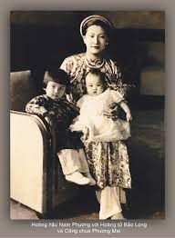

Phần III- Chương 1
Rồi ngày ông ra đi đã tới. Đó là ngày mồng 2 tháng 9, chỉ hai ngày sau lễ thoái vị. Vào lúc sáng sớm, khi xe vừa nổ máy thì bà Nam Phương và các con chạy ra sân tiễn ông. Nếu như trước đây, mỗi lần ông rời dinh, có cả hàng rào quân lính thì giờ đây cuộc ra đi thật lặng lẽ. Mà cuộc ra đi lần này lại xa xôi, chưa biết ngày nào ông quay lại và kể cả chưa biết cuộc đời tiếp theo của ông sẽ ra sao. Lần này, chỉ trơ trọi đám gia nhân và mẹ con bà Nam Phương tiễn ông. Tuy vậy cảnh vợ chồng, cha con chia tay nhau thật cảm động. Bà lặng lẽ đặt bàn tay phải lên cây thánh giá đeo trên chiếc vòng cổ và nhẹ nhàng nói với ông:
- Ngài cố gắng giữ gìn sức khỏe để làm tốt công việc được giao. Em thấy Cụ Hồ tỏ ra tin tưởng ngài nên ngài đừng làm điều gì tổn hại đến niềm tin ấy.
- Em yên tâm ở lại chăm sóc mẹ và các con. Tình hình ra sao, ta sẽ viết thư về em rõ. Đừng buồn nhé!
Ông dặn bà đừng buồn bởi những giọt nước mắt nóng hổi của bà vẫn còn vương lại trên má ông mặc dù bà cố tỏ ra bình thản và không khóc. Rồi ông cũng nước mắt rưng rưng, ôm hôn Bảo Thắng, đứa con nhỏ nhất và căn dặn những đứa con còn lại những lời dịu dàng bằng tiếng Pháp.
Bà Từ Cung cũng lo lắng không kém bà Nam Phương, bà còn tưởng tượng đến những cảnh tồi tệ nhất có thể xảy ra dọc đường đối với con bà.
Tuy nhiên mọi tình huống lại hoàn toàn ngược lại. Dọc đường đi, phái đoàn của ông Vĩnh Thụy được dân chúng nhiều nơi vui vẻ nghênh đón. Nhân dân Hà Nội vẫn chưa quên khuôn mặt ông trên các con tem thư có in hình ông và bà Nam Phương. Họ vui mừng được nhìn thấy ông trực diện bởi suốt mười chín năm lên ngôi vua (thực chất trị vì là mười ba năm kể từ năm 1932), ông chỉ ra Hà Nội có một lần, một lần từ khi ở Paris về, vào thời mà người Pháp cho ông đi thăm đất nước trước khi nắm quyền bính.
Ngay chiều mồng 5 tháng 9, Chủ tịch Hồ Chí Minh đã đến đáp lễ ông cố vấn tại nhà riêng. Bắt đầu từ ngày mồng 8 tháng 9 ông cố vấn dự đều đặn các phiên họp của Hội đồng Chính phủ được tổ chức vài lần trong một tuần. Mỗi lần họp, ông được xếp chỗ xứng đáng. Ông có phòng làm việc riêng cạnh phòng của Chủ tịch Hồ Chí Minh. Ông được ở thoải mái trong một khu phố vào loại sang trọng nhất Thủ đô, có cả một tiểu đội khoảng mười người được phái đến canh gác tòa nhà và bảo vệ ông. Ông xúc động không nói nên lời trước biết bao vinh hạnh, biết bao biểu hiện tôn kính của Chủ tịch Hồ Chí Minh và Chính phủ dành cho ông. Các nhà báo Hà Nội tổ chức một bữa tiệc lớn để hoan nghênh ông đã tự nguyện từ bỏ cuộc sống vương giả để trở thành công dân bình thường, hy sinh ngai vàng vì lợi ích dân tộc, vì hạnh phúc của nhân dân. Ông viết cho bà Nam Phương những lá thư ca ngợi Cụ Hồ với những lời lẽ thật cảm động. Đọc thư ông, mọi nỗi lo lắng, hoài nghi trong lòng bà tan biến. Bà bắt đầu cảm thấy kính mến quý trọng Cụ Hồ và tin tưởng vào tình cảm và những việc làm của Cụ. Mỗi lần nói về Chủ tịch Hồ Chí Minh, bà luôn dùng hai chữ Cụ Hồ hoặc Hồ Chủ tịch một cách trìu mến và kính cẩn, tôn trọng.
 .
.
Vậy là bà đã yên tâm về ông, chỉ mong ông làm việc tốt để khỏi phụ lòng tin của Cụ Hồ và Chính phủ. Giờ đây, bà dành hết tâm sức vào việc chăm lo sức khỏe bà Từ Cung, chăm sóc dạy dỗ các con. Cả nhà bà bây giờ ở cung An Định, một ngôi nhà xây lớn nhưng kém tiện nghi ở gần khu dân cư của thành phố Huế, trông như một cửa hàng bánh ngọt, một bên chạy dọc theo con đường đi Đà Nẵng, một bên sát con sông hẹp gọi là sông An Cựu. Ở đây thuyền đi lại như mắc cửi. Trước tòa nhà là cái sân, ở đó có hòn núi non bộ. Phía ngoài là chiếc cổng xây bề thế có họa tiết trang trí bằng đá. Phía sau tòa nhà là con đường dài giữa hai hồ nước ở hai bên. Cổng sau xây đơn giản, thanh thoát bù lại dáng vẻ nặng nề của cung An Định. Hai bên sân sau còn có hai dãy nhà, kiến trúc đơn giản, một bên là nhà bếp và bên kia đã được dự kiến xây chuồng hổ và nuôi cá sấu. Cung An Định được xây từ đầu thế kỷ, kiến trúc pha lẫn Âu và Á, cổ và kim, lỗi thời. Đồ đạc nội thất tồi tàn, trong nhà ít ánh sáng. Từ khi xây dựng, cung An Định chưa bao giờ được cải tạo hay sửa sang một cách quy mô cho hợp với trào lưu hiện đại. Sự độc đáo của tòa nhà này là sân sau được bố trí như một nhà hát ngoài trời do vua Khải Định ra lệnh xây dựng. Sân khấu là một sân trời xây trên bệ cao, trước mặt thấp hơn là chỗ ngồi của người xem.
Lúc này, cuộc sống của bà Từ Cung và mẹ con bà Nam Phương cũng khó khăn hơn. Cũng như chồng mình, bà Nam Phương có nhiều tiền để dành ngoài những đồ trang sức đắt tiền do ông Vĩnh Thụy và các bạn biếu tặng. Nhưng tiền của riêng cá nhân bà mà gia đình cho đều gửi ở ngân hàng Đông dương hoặc ở Pháp. Lấy ra lúc đó cũng không phải là dễ. Ngoài những khoản chi tiêu cho gia đình, bà còn phải trang trải trả cho những người giúp việc. Dù đã giảm rất nhiều nhưng số gia nhân đầy tớ vẫn còn đến mười người. Trong số đó có chị Sử Lệ là một người hầu phòng rất mực trung thành, đã rút cả tiền để dành để giúp đỡ hoàng gia.
Ở đây, bà Nam Phương và các con bà được tự do đi lại chỉ cần báo trước cho ông chính trị viên đơn vị bộ đội được giao nhiệm vụ canh gác cung An Định cũng như bảo đảm an toàn cho các thành viên của hoàng gia mỗi khi cần đi ra ngoài phố.
2.
Thời gian này bà Nam Phương cố nén nỗi nhớ nhung chồng và dồn hết tâm sức dạy dỗ con. Rất mừng là mấy anh em lúc nào cũng quấn quýt bên nhau. Bảo Long thật sự là một cậu con trai mẫu mực chững chạc, biết suy nghĩ.

.Năm học này Bảo Long và Phương Mai, Phương Liên lại cắp sách đến trường nhưng không phải là trường cũ. Tất cả đều học trường công trong thành phố là trường dành cho con gái nhưng ở các lớp dưới, con trai con gái học chung nhau. Không còn gia sư trong nhà như trước nên chúng phải tự giác và tự mày mò. Chương trình cũng như cách học khác hẳn trường Công giáo mà chúng học trước đây. Ở đây cấm nói tiếng Tây vì thế chúng phải dùng hoàn toàn bằng tiếng Việt. Lúc đầu các con bà nói tiếng mẹ đẻ rất kém nên ngại nói. Chúng phải cố gắng lắm mới học được tiếng Việt. Thỉnh thoảng Bảo Long bị các cô giáo trường Đồng Khánh phạt quỳ quay mặt vào tường. Bảo Long ngoan ngoãn chấp hành. Nhiều hôm đi đón con, bà Nam Phương thấy con bị phạt, đau lòng lắm nhưng cũng phải quay mặt đi để cho con thi hành xong giờ phạt. Ngại nói tiếng Việt, các con bà thấy mình lạc lõng nhưng dần dần chúng đã hòa nhập được với các bạn trong lớp. Có hôm thấy các cháu lúng túng không tìm được từ tiếng Việt thích hợp, cô giáo phải nhắc nhưng dặn đừng kể với ai, vì làm như thế chúng sẽ ngại không chịu nói, sẽ chóng quên tiếng mẹ đẻ nhất là mấy cô em gái của Bảo Long. Ngoài giờ học, Bảo Long vẫn say sưa đọc đống sách truyện tiếng Pháp mà ông nội để lại. Nhờ vậy khi chuyển sang học bằng tiếng Việt, Bảo Long không quên tiếng Pháp.
Giờ đây Bảo Long thấy các bạn trong lớp, trong trường chẳng mảy may phân biệt đối xử, thù ghét gì dòng dõi hoàng gia. Ngược lại mọi người còn tỏ ra kính nể khi cha của Bảo Long đã trở thành người của Chính phủ, cùng làm việc với Chủ tịch Hồ Chí Minh. Vì thế Bảo Long cảm thấy rất thoải mái, tự tin và hòa nhập. Cậu rong chơi ngoài đường, chạy nhảy, nô đùa, nghịch ngợm, cãi nhau, đánh nhau như những học trò khác. Cậu cảm thấy tự do và thích thú vì cũng té nước vào nhau trên các vũng nước trong mùa mưa xứ Huế, cũng đi chăn vịt với trẻ con đường phố và không còn bị gò bó bởi bao điều cấm kỵ, ràng buộc đối với một Đông cung thái tử. Ngoài giờ học, Bảo Long nhập bọn chơi với học trò bình dân, hát Tiến quân ca, tập đánh trận. Nhiều lần anh đánh nhau với bọn trẻ con Tây.
Thông minh, học giỏi, Bảo Long luôn đứng đầu lớp, được ghi tên trên bảng danh dự. Trong các buổi chào cờ ngày đầu tuần, anh được vinh dự kéo lá cờ đỏ sao vàng lên đỉnh cột cờ ở sân trường. Sáng nào cũng vậy (trừ chủ nhật) các con bà đến trường bằng xe kéo.
Không những tích cực học tập ở trường, các con bà cũng như ông Vĩnh Thụy ở Hà Nội, tham gia nhiệt tình vào các cuộc mít tinh, biểu tình. Đó là thời kỳ của những hoạt động sôi nổi tác động mạnh đến tâm lý người dân. Chúng còn hô khẩu hiệu to hơn những đứa trẻ khác.
Còn về đạo giáo của mình, bà cũng có nhiều thay đổi trong cách sinh hoạt. Trước đây có cha cố đến nhà rao giảng kinh thánh, có cầu nguyện ngay trong phòng riêng vào mỗi buổi tối. Bây giờ tất cả những điều kiện đó không còn nữa. Mỗi buổi sáng bà dậy sớm tập thể dục. Chính nhờ tập luyện đều đặn như vậy nên bà vẫn có một dáng người tuyệt đẹp. Là người mẹ có năm đứa con nhưng lúc này bà mới có ba mươi mốt tuổi nên trông bà vẫn còn đẹp lắm. Thân hình mảnh dẻ, cân đối, kiêu sa. Sau khi tập thể dục xong bà đến giáo đường dòng Chúa Cứu thế cách nhà bà khoảng trăm mét, để cầu nguyện và để nghe cha cố giảng giáo lý và cũng là dịp để nghe ngóng tin tức.
Trong Tuần lễ vàng nhằm khắc phục tình trạng trống rỗng ngân sách được chính phủ Việt Nam Dân chủ Cộng hòa đứng đầu là Chủ tịch Hồ Chí Minh phát động, cựu hoàng hậu là người có công rất lớn đối với Tuần lễ vàng ở Huế.
Ngày 17 tháng 9 năm 1945, Tuần lễ vàng khai mạc tại phía nam sông Hương, bà là người đầu tiên cởi toàn bộ trang sức: kiềng vàng, bông tai, xuyến... đeo trên người ra quyên góp giữa tiếng vỗ tay nhiệt liệt của dân chúng. Với hành động, nghĩa cử cao đẹp và gương mẫu đi đầu đó, bà được mời làm chủ tọa Tuần lễ vàng tại Huế. Hành động đáng khen ngợi của cựu hoàng hậu Nam Phương đã lan rộng khắp các giai tầng dân chúng ở Huế. Tuần lễ vàng tại Huế nói riêng và trên cả nước nói chung nhờ đó giành được kết quả thật tốt đẹp.
Là người khiêm nhường, được gắn huy hiệu Cờ đỏ sao vàng, được tuyên dương, bà thấy cũng chẳng có gì đáng gọi là công trạng. Tiếp theo là Tuần lễ quyên góp đồng, quyên góp vải may quần áo giúp trẻ em nghèo trong mùa đông giá lạnh. Bà cùng các con bà tham gia rất nhiệt tình. Dân chúng nhìn bà với con mắt ngưỡng mộ. Trước đây những năm Bảo Đại còn tại vị, bà đã để lại trong họ hình ảnh của một bà hoàng yêu kiều mà không kiêu căng, coi thường người dưới; hiền lành mà kiên quyết và dứt khoát thì nay lại là hình ảnh mẫu mực của một bà phu nhân cố vấn tối cao của Chính phủ nước Việt Nam Dân chủ Cộng hòa. Dư luận tỏ ra thiện cảm với bà khi bà tuyên bố với nhà báo:
Tôi rất vui mừng và cảm ơn Chính phủ Dân chủ Cộng hòa đã đối đãi rất tử tế với gia đình chúng tôi. Chúng tôi rất vui mừng thấy chị em đã tiến rất nhanh chóng trên con đường cứu nước. Từ trong nội cung mới sang, nhà cửa xếp đặt chưa xong, hiện nay tôi chưa làm được gì nhiều, song nay mai khi nào chị em có việc gì cần đến tôi, tôi sẽ rất sung sướng mà gánh lấy một phần công việc[1]. Khi dự tiệc của các nhà báo chiêu đãi phóng viên Mỹ của hãng Associated Press ghé qua Huế, bà yêu cầu nhà báo Mỹ khi về nước làm ơn cho Chính phủ và dân chúng Mỹ biết chồng bà, hoàng thân Vĩnh Thụy đã rất vui lòng thoái vị để tỏ lòng đoàn kết với toàn dân Việt Nam ủng hộ Chính phủ Việt Nam Dân chủ Cộng hòa.
Qua thư của chồng mình, bà biết ông đã vượt qua xuất sắc một số thử thách, trở thành một chính khách được thừa nhận, được mọi người kính nể. Bà thấy yên tâm và vui mừng vì con đường mà ông bà đã chọn.
3.
Năm 1945, một nạn đói khủng khiếp hoành hành người dân Việt Nam. Có đến gần hai triệu người chết đói. Vừa giành được chính quyền từ tay Pháp và Nhật, gặp lúc hậu quả nặng nề từ chính sách kinh tế của Nhật bắt nhân dân Việt Nam nhổ lúa trồng đay, lại từ chính sách ngu dân của thực dân Pháp, rồi nhà nước non trẻ chưa ổn định về mặt xã hội, chính phủ Việt Nam Dân chủ Cộng hòa gặp muôn vàn khó khăn về kinh tế, chính trị, an ninh xã hội.
Ngày mồng 3 tháng 9 năm 1945, tại miền Bắc, chính phủ Việt Minh tiến hành chiến dịch chống nạn đói rồi tiếp đến là nạn mù chữ.
Ngày 26 tháng 9, Chủ tịch Hồ Chí Minh đã gửi thư kêu gọi những người yêu nước miền Nam tham gia vào cuộc đấu tranh. Chính vì thế ở miền Nam cuộc kháng chiến đã được tổ chức từ tháng 12 năm 1945 và nhận được sự tiếp viện, tăng cường về người và lương thực từ Hà Nội.
Vậy mà khó khăn vẫn chưa hết! Có lẽ do vẫn luyến tiếc vì đã tuột tay một thuộc địa giàu có mang lại những lợi nhuận đáng kể sau gần một trăm năm có mặt, thực dân Pháp dựa vào thế lực của quân Anh quốc gây hấn ở miền Nam với ý đồ quay trở lại Đông dương. Ngày mồng 5 tháng 10 năm 1945, những đội quân Pháp do tướng Leclerc cầm đầu đã đổ bộ xuống Sài Gòn. Máu của những người Việt Nam và những người Pháp lại đổ xuống đất Việt Nam. Sau nạn đói lại gặp lúc chiến tranh, cuộc sống của người dân Việt Nam lại bất ổn, lại khó khăn hơn bội phần.
Giờ đây khi trở lại cuộc sống người dân thường, sống trong lòng dân chúng, chia sẻ cuộc sống hàng ngày với họ, bà Nam Phương thấu hiểu một cách rõ nét những gì là không tốt mà chế độ thực dân mang lại, những nỗi đau mà người dân một nước nô lệ phải gánh chịu. Được chứng kiến tất cả những điều đó, bà thấy mình cần phải làm gì cho đất nước trong khi chồng bà đã và đang được Chính phủ trọng dụng và ông cũng đang hết lòng vì họ.
Trước thảm cảnh đau lòng mà đồng bào Việt Nam sẽ phải gánh chịu, máu sẽ phải đổ nếu cuộc chiến tranh xảy ra, ngày 18 tháng 11 năm 1945 bà cựu hoàng hậu Nam Phương đã gửi một bức thông điệp cho bạn bè ở châu Âu và trên thế giới và cho cả Harry S. Truman, tổng thống Mỹ, yêu cầu họ lên tiếng tố cáo hành động xâm lăng của thực dân Pháp với lời lẽ như sau:
'' Nước Việt Nam đã thoát khỏi ách nô lệ... Chính phủ lâm thời Dân chủ Cộng hòa đã được thành lập. Chồng tôi, ông Vĩnh Thụy tức cựu hoàng đế Bảo Đại đã từng tuyên bố: “Vui lòng làm dân một nước tự do còn hơn làm vua một nước nô lệ” nên đã đồng ý thoái vị. Tôi cũng đã đồng ý với chồng tôi, nên chồng tôi hiện đã làm cố vấn trong chính phủ lâm thời của nước Việt Nam Dân chủ Cộng hòa. Riêng tôi, tôi cũng đã cùng với các chị em phụ nữ giúp nhiều việc trong công việc xã hội ở nước chúng tôi. Chúng tôi chỉ một lòng phụng sự cho Tổ quốc của chúng tôi. Nhưng từ lâu nay bọn thực dân Pháp được sự che chở của phái bộ Anh đã xâm chiếm đất nước chúng tôi và miền Nam nước Việt Nam hiện giờ, nơi chôn rau cắt rốn của tôi đang bị chìm đắm trong vòng khói lửa. Đồng bào chúng tôi trong ấy có cả thân quyến của tôi bị giết, bị hành hạ bởi sự tham tàn của một bọn người xâm lược. Những bạn bè của tôi ở nhiều nước châu Âu, các ông các bà đã quen biết tôi, tất cả những người yêu chuộng tự do công lý, các người kêu gọi chính phủ của các người cương quyết can thiệp để ngăn cản bàn tay đẫm máu của bọn thực dân Pháp ở miền Nam nước Việt Nam là các người đã làm ơn cho dân tộc chúng tôi, làm ơn cho tất cả phụ nữ chúng tôi, cho cả tôi nữa. Các người hãy tin chắc chắn rằng mối cảm tình nồng nàn của dân tộc chúng tôi, của riêng tôi đối với các người sẽ nhờ đó mà tồn tại mãi mãi.
Thay mặt cho hàng chục triệu phụ nữ Việt Nam, tôi thỉnh cầu tất cả bạn bè của tôi và bạn bè của nước Việt Nam hãy bênh vực cho tự do. Xin các chính phủ của khối tự do sớm can thiệp để kiến tạo một nền hòa bình công minh và chân chính và xin quý vị nhận nơi đây lòng biết ơn sâu sắc của tất cả đồng bào của chúng tôi.
Ký tên: bà Vĩnh Thụy.
Bà quả là người thật sự hết lòng vì nền độc lập của dân tộc.
Nhưng những gì vẫn xảy ra hàng ngày như cảnh những người lính Trung Hoa ngang nhiên cướp bóc, trấn lột vơ vét của cải của người dân đem về doanh trại rồi cảnh xô xát trong các gia đình những kiều dân Pháp đã làm cho bà lo lắng sợ hãi. Tâm trạng bà lúc nào cũng lo âu phấp phỏng.
Tuy nhiên bà vẫn đặt niềm tin và hy vọng vào chính quyền cách mạng và Cụ Hồ. Trả lời hai phóng viên báo Quyết Thắng, cơ quan của Việt Minh ở Trung Bộ, khi họ hỏi về tình hình của cựu hoàng Bảo Đại ở Hà Nội, bà nói:
- Cám ơn các ông, chồng tôi vẫn mạnh khỏe, làm việc nhiều. Thỉnh thoảng ông ấy có viết thư về cho bà nội các cháu và mẹ con tôi. Thư nào cũng nói tốt về Cụ Hồ. Ông ấy nói rằng Cụ Hồ có tuổi nhưng làm việc miệt mài, có hôm về rất muộn, thức ăn đã nguội mà cũng chẳng yêu cầu người phục vụ hâm lại. Cụ không bao giờ đòi hỏi gì cho riêng mình mà bằng lòng với cuộc sống đơn giản, đạm bạc. Nhiều lúc có người hỏi tại sao là một chủ tịch nước mà Cụ lại sinh hoạt giản dị đến vậy, Cụ trả lời là vì dân ta còn quá đói khổ và vất vả.
Anh nhà báo lại hỏi tiếp:
- Thế còn bà, bà nghĩ gì về vai trò của cựu hoàng trong xã hội mới và trách nhiệm của phu nhân cố vấn tối cao?
Bà vui vẻ trả lời:
- Bây giờ đất nước được độc lập rồi, đã đến lúc người phụ nữ phải coi trọng vai trò của mình. Phụ nữ Trung Nam Bắc có nhiệm vụ chung là tích cực tham gia vào công cuộc tái thiết đất nước. Tôi mong rằng đến một lúc nào đó chính phủ Cụ Hồ sẽ giao cho tôi một trách nhiệm cụ thể. Tôi sẽ xin hết lòng phụng sự đất nước và nhân dân.
- Thế còn gia đình, các con cái bà tại cung An Định, cuộc sống ra sao, bà có thể cho chúng tôi được biết?
- Tốt, chúng tôi không có gì phải phàn nàn. Tất cả đều khỏe mạnh, các cháu vẫn đều đặn theo học ở các trường công của thành phố. Cám ơn các ông đã đến phỏng vấn
Vì muốn đóng góp công sức của mình cho công cuộc kiến thiết đất nước, mỗi lần viết thư cho chồng, bà đều nhắc lại nguyện vọng đó.
Một thời gian ngắn sau, đáp ứng đề nghị của bà, Hồ Chí Minh đã ký sắc lệnh bổ nhiệm bà cùng với hai chục nhân sĩ trí thức có tên tuổi tham gia Ủy ban nghiên cứu kế hoạch kiến quốc thành lập ngày 31 tháng 12 năm 1945. Tuy vậy bà chưa kịp một lần nào rời Huế để tham gia các cuộc họp của Ủy ban này thì các sự cố đã xảy ra ngoài ý muốn của bà.
Cùng lúc đó, một tin vui đến với bà. Tháng 12 năm 1945, ông Vĩnh Thụy nhận lời mời ứng cử đại biểu Quốc hội tỉnh Thanh Hóa và đã trúng cử với số phiếu khá cao: 92% phiếu bầu mặc dầu ông không bận tâm lắm đến việc bầu cử, không đi vận động bầu cử và cũng không biết đích xác địa điểm hòm phiếu để thực hiện quyền công dân của mình. Ông có vẻ như thờ ơ với tất cả. Khi nhận được tin đó, bà Từ Cung tỏ ra vui mừng với sự được tín nhiệm của con trai nhưng bà Nam Phương có mừng song không giấu nổi niềm lo lắng. Bà lo bởi bà quá hiểu ông: không biết rồi ông có mãi mãi đáp lại được lòng tin của Cụ Hồ và sự tín nhiệm của nhân dân không? Vả lại nếu những sở thích, những thú vui trong cuộc sống có cơ trở lại, liệu ông có đủ nghị lực lao vào công việc để quên đi cái kiểu ngựa quen đường cũ đó không?
Chú thích:
[1] Trích báo Quyết chiến, cơ quan ủng hộ chính quyền nhân dân cách mạng tại Thuận Hóa, ngày 18 tháng 9 năm 1945.